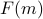
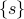
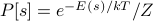
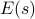
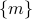
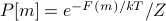
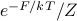

What is Free Energy?
On this page, I hope to provide an intuitive explanation of what free energy means. Since we'll be drawing many pictures of  and minimizing it in different contexts, it will be useful what exactly this function represents.
Free Energy is minimized in equilibrium
Operationally, we care about the free energy because
The equilibrium value of  is one that minimizes the free energy .
is one that minimizes the free energy .
So it's rather straighforward to ‘‘do thermodynamics’’ once we know : we just have to take its derivative w.r.t. , set it equal to zero, and then solve for .
However, this seemingly innocent claim contains a whole world of microscopic details, such as
What does
 really mean?
really mean?How does the magnetization
relate to the microstates of our system?
Below, I hope to answer some of these questions.
Motivation: probabilities of ‘‘mesostates’’
Will be completed one day…
The probability distribution over microstates  is given by the Boltzmann factor , where the exponential is weighted by the energy .
If we want to assign an analogous probability distribution over mesostates , we now need to weight probabilities by the free energy of a mesostate, so that 
The free energy
takes into account both the ‘‘average energy’’ of the microstates within that mesostate, as well as entropic rewards for having lots of microstates in a mesostate.
The resulting function is an ‘‘effective energy’’ in terms of the mesostates rather than the individual microstates , which is helpful because there are too many microstates to keep track of!
In the language of physical chemistry or protein dynamics, the same concept is often termed a ‘‘collective variable’’ or a ‘‘reaction coordinate.’’
We have too many microscopic degrees of freedom, and we want to define some ‘‘coarse-grained’’ function of them that's easier to think about.
There are many caveats about taking too literally as a energy surface!
Nearby
's can represent microstates that are actually quite far apart.As the temperature changes, so does the shape of .
We only see a one-dimensional slice through a very very high-dimensional energy landscape.
And much more…
Nevertheless, the function is very useful to think about, because it directly tells us the thermal populations of different values of
: a mesostate with free energy will be occupied with probability .In particular, this tells us that the most populated mesostate is the one which minimizes the free energy .